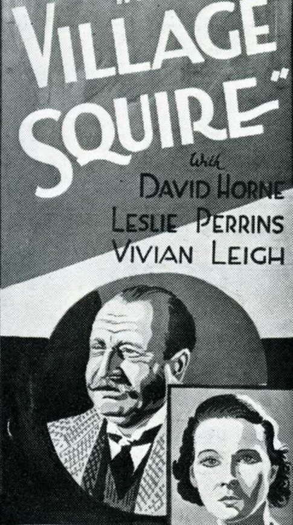
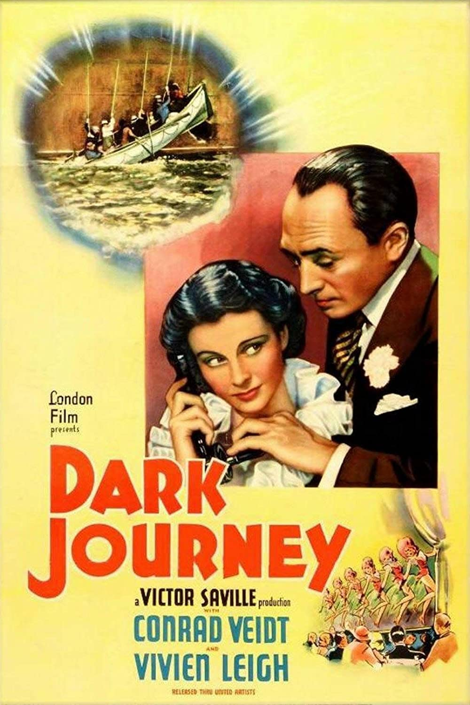
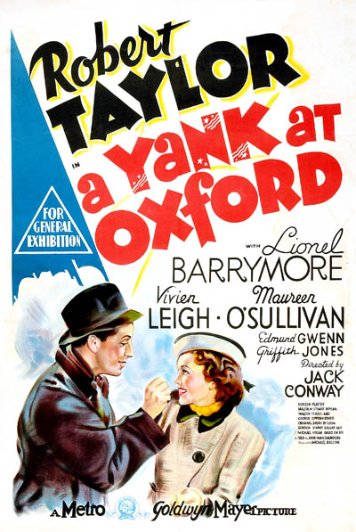
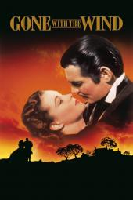
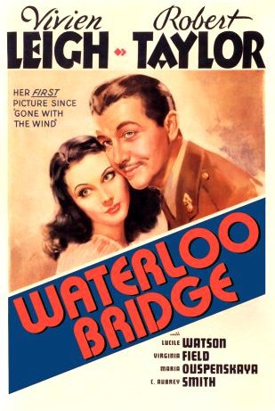
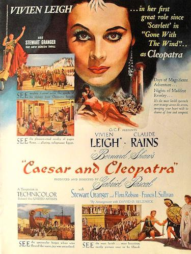
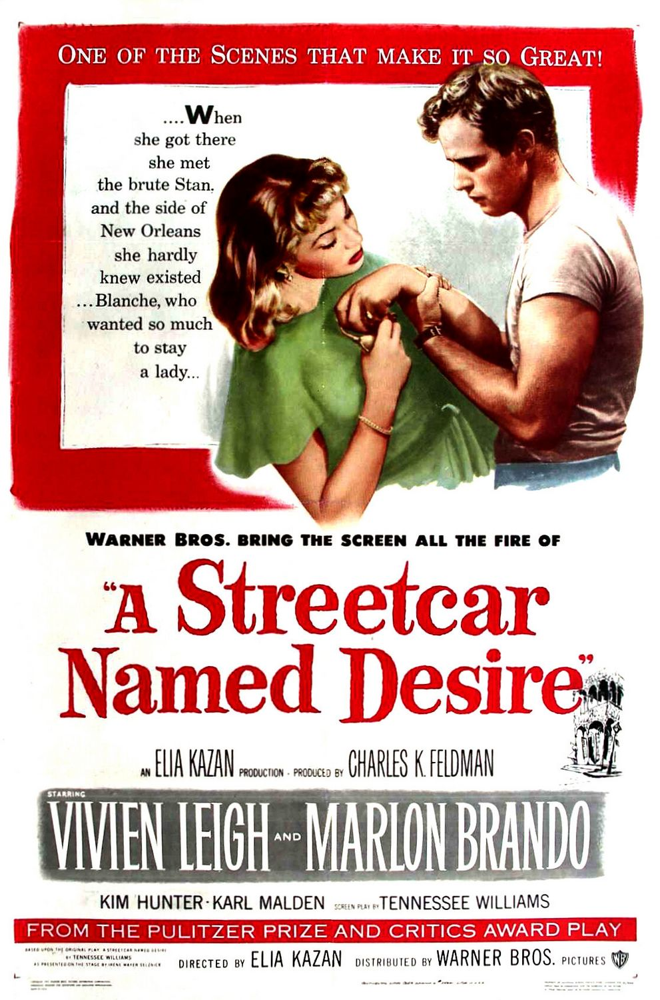
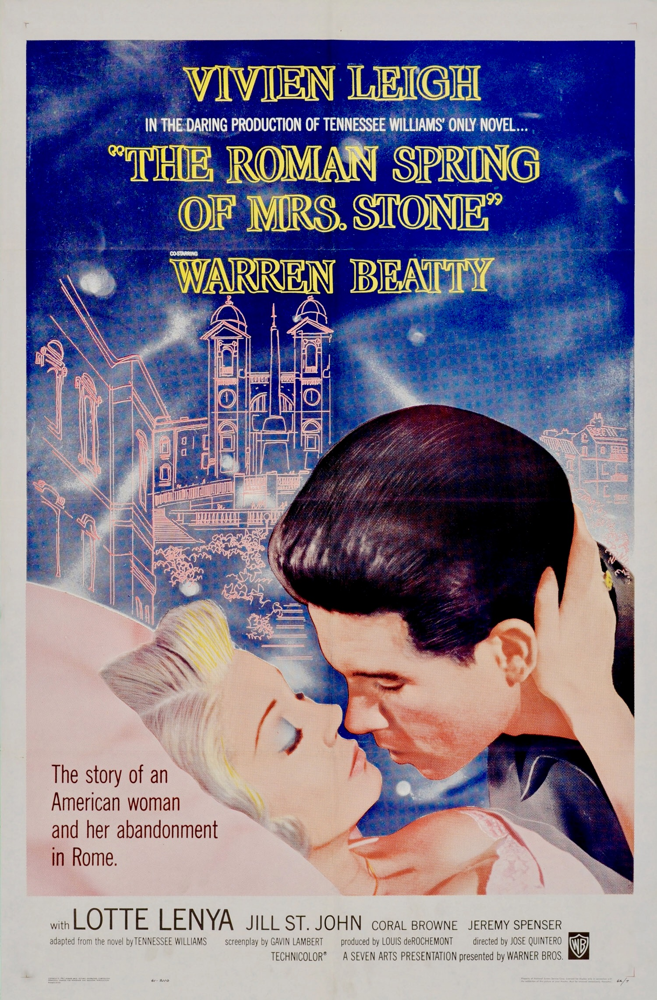
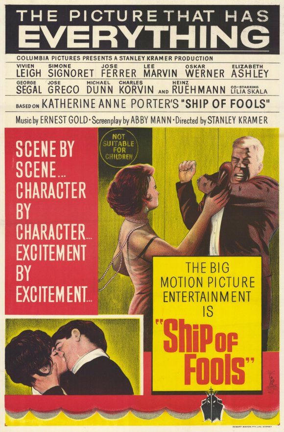

Here is a list of some of his movies:
-
The Village Squire (Rose Venables) - 1935
 -
Dark Journey (Madeleine Goddard) - 1937
 -
A Yankee at Oxford (Elsa Craddock) - 1938
 -
Gone With The Wind (Scarlett) - 1939
 -
Waterloo Bridge (Myra) - 1940
 -
Caesar and Cleopatra (Cleopatra) - 1945
 -
A Streetcar Named Desire (Blanche) - 1951
 -
The Roman Spring of Mrs. Stone (Karen Stone) - 1961
 -
Ship Of Fools (Mary Treadwell) - 1965

Search more on IMDB
Back to Home